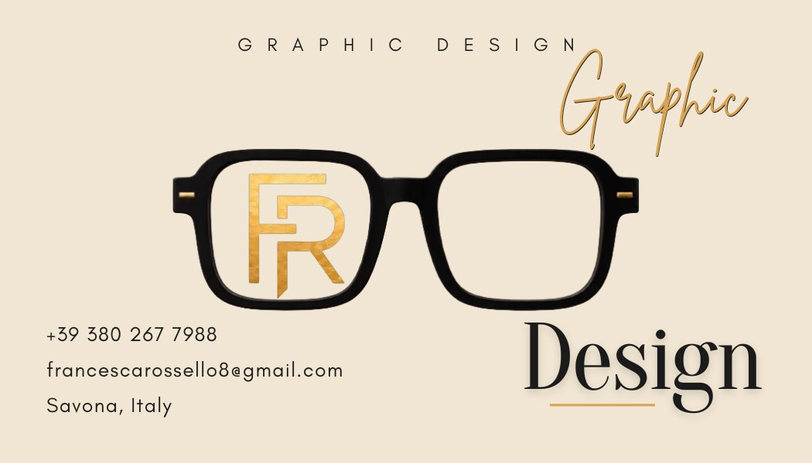
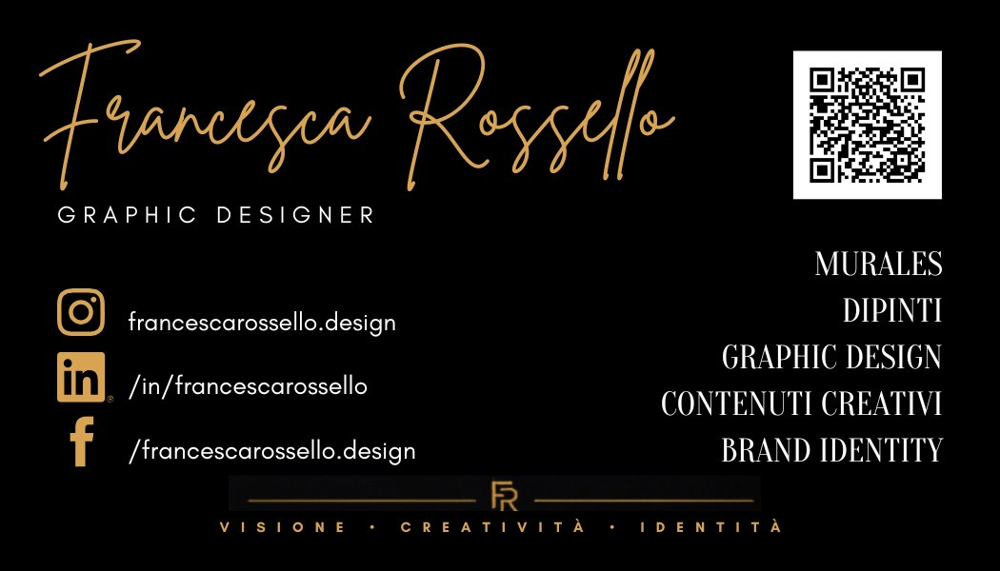

Identità visiva / Biglietti da visita / Personal branding
Biglietto da visita Francesca Rossello
Un biglietto da visita non deve solo contenere contatti. Deve raccontare chi sei prima ancora che tu parli.

Il progetto
Questo biglietto da visita nasce come esercizio di identità personale: non un semplice supporto con nome, telefono e social, ma un piccolo oggetto visivo capace di raccontare stile, personalità e direzione professionale.
Il fronte lavora su un’immagine riconoscibile, elegante e simbolica: gli occhiali, il monogramma FR e la palette chiara costruiscono una prima impressione pulita, artistica e memorabile.
Il retro organizza contatti, servizi e presenza digitale in modo più diretto, con contrasto nero/oro e QR code, mantenendo un tono visivo coerente con l’identità di FR Visual Design.
Perché rivolgersi a me invece di usare solo l’intelligenza artificiale?
L’intelligenza artificiale può generare immagini, suggerire layout e accelerare alcune fasi creative. Ma un’identità visiva non nasce solo da un’immagine bella.
Un biglietto da visita deve rappresentare la tua essenza, il tuo tono, il tuo modo di presentarti e il messaggio che vuoi lasciare a chi ti incontra.
Il tocco artistico si vede nei dettagli: nella scelta del segno, nel ritmo degli spazi, nella coerenza dei colori, nella relazione tra immagine e personalità. È questo che rende un progetto unico e speciale: non sembrare uno dei tanti, ma diventare riconoscibile.
FR Visual Design usa gli strumenti digitali come supporto, ma il valore finale resta umano: ascolto, gusto, selezione, correzione, sensibilità e capacità di trasformare un’idea in qualcosa che ti somiglia davvero.
Fronte e retro

Cosa posso progettare per la tua identità
- Biglietti da visita fronte/retro
- Card professionali
- QR code integrato
- Mini brand identity
- Palette e font coordinati
- File pronti per stampa e digitale
- Revisione grafica di biglietti già esistenti
Vuoi un biglietto che parli davvero di te?
Raccontami chi sei, cosa fai e che impressione vuoi lasciare. Da lì possiamo costruire un biglietto da visita personale, riconoscibile e coerente con la tua identità.
Raccontami il tuo biglietto